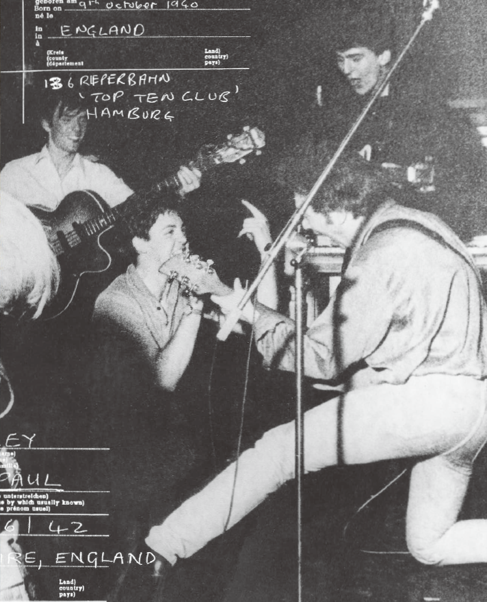

1960-1962 HAMBURGO ALEMANIA "Cuando lo recuerdas, te das cuenta de lo bien que estábamos, aunque en aquel momento pensaras: 'Gor, tenemos que tocar seis horas cada noche y solo nos pagan dos dólares, y encima tienes que tomarte estas pastillas para no dormir; ¡esto no está bien!'". John "Una noche llegamos a Hamburgo muy tarde. Nos equivocamos con el horario; no había nadie esperándonos. Pudimos encontrar Hamburgo en el mapa, pero luego tuvimos que buscar el barrio de St. Pauli y después la Reeperbahn. Cuando por fin encontramos la calle y el club, ya estaba todo cerrado. Allí estábamos, sin hotel ni nada, y ya era hora de dormir". Paul